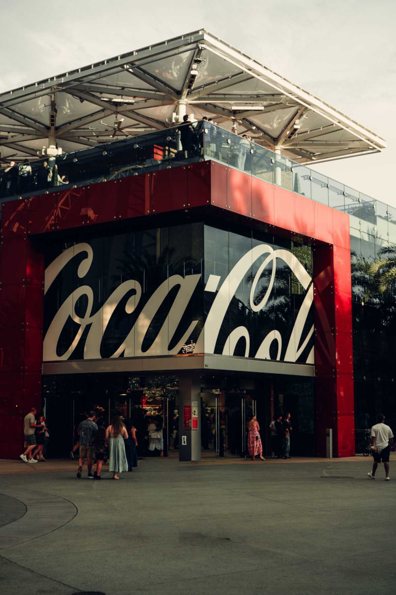

A Coca-Cola foi criada em 1886 pelo farmacêutico John Pemberton, na cidade de Atlanta, nos Estados Unidos. Inicialmente, a bebida era produzida como uma espécie de xarope e vendida em farmácias, sendo divulgada como um produto medicinal. Com o passar do tempo, começou a ganhar popularidade, principalmente pelo seu sabor diferente e refrescante. Em 1892, foi fundada a The Coca-Cola Company, responsável pela produção e comercialização da bebida. A partir daí, a marca começou a crescer e conquistar novos mercados, chegando a diversos países. Ao longo dos anos, a Coca-Cola se tornou conhecida mundialmente, não apenas pelo refrigerante, mas também por suas propagandas, embalagens e estratégias de marketing. Atualmente, é uma das marcas mais reconhecidas do mundo, oferecendo diversos produtos além do refrigerante tradicional.